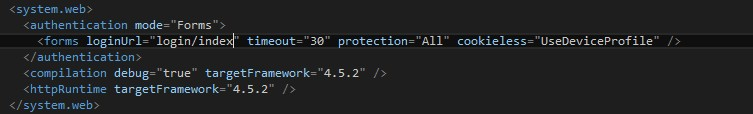

自訂 AuthorizeFilter
自行 AuthorizeFilter
生命週期說明
根據 mvc 的生命週期，其中有兩個驗證的點 Authentication Filter 與 Authorization Filter 來驗證使用者是否驗證成功，這兩個分別代表:
- Authentication Filter : 驗證你是誰
- Authorization Filter : 驗證你能做什麼事情
 來源 : goo.gl/uXbsgV
來源 : goo.gl/uXbsgV
實作 Authorization Filter
這兩個實作方法差不多，而今天會實作 Authorization Filter 當作範例。
- 首先新增一個 MyAuthorizationFilter
- 繼承 FilterAttribute 與 實作 IAuthorizationFilter (要注意命名空間是 System.Web.Mvc ，不要選錯了)
- 驗證通過不要做任何事 vs 驗證失敗 assign => filterContext.Result = new HttpUnauthorizedResult();
MyAuthorizationFilter - cs
1
2
3
4
5
6
7
8
9
10public class MyAuthorizationFilter : System.Web.Mvc.FilterAttribute, System.Web.Mvc.IAuthorizationFilter
{
public void OnAuthorization(AuthorizationContext filterContext)
{
if (!filterContext.HttpContext.User.Identity.IsAuthenticated)
{
filterContext.Result = new HttpUnauthorizedResult();
}
}
}
至於 assign HttpUnauthorizedResult() 的意思是說，驗證沒通過，會將導向登入頁面。 這邊以表單驗證為例，登入頁面網址是設定在 web.config 。
config
參考
[Using ASP.NET MVC 5 IAuthenticationFilter for Authentication Challenges]
[pluralsight 範例]
[附上 web api2 驗證說明]


{kind=link}